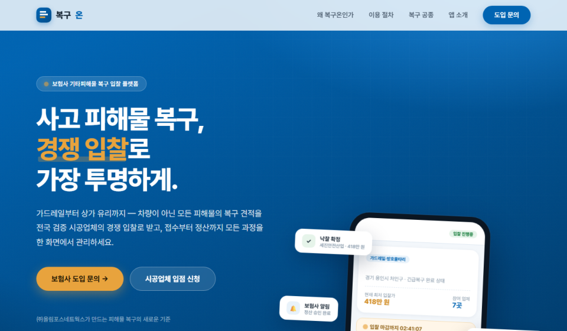
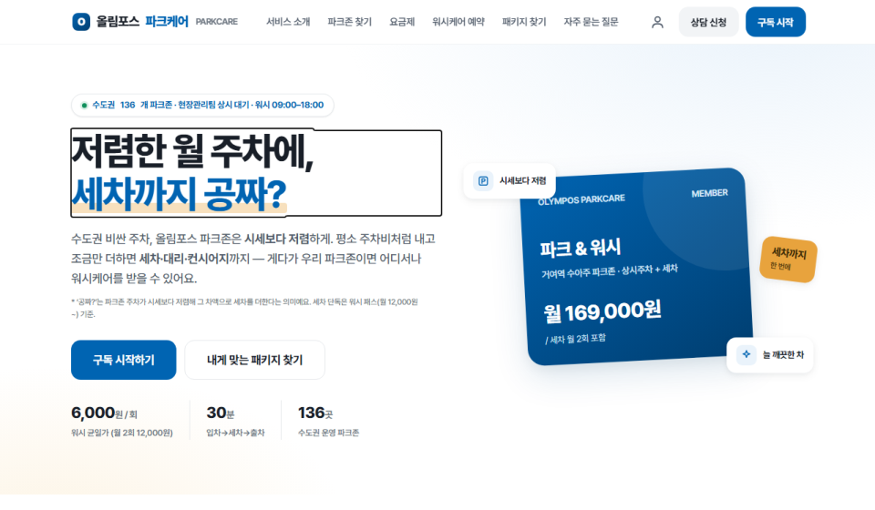
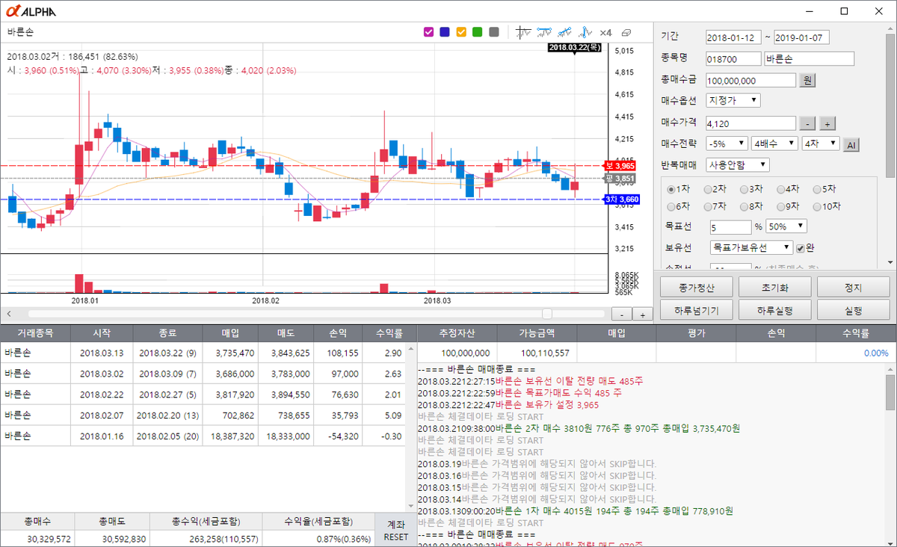
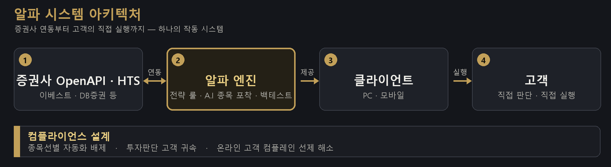
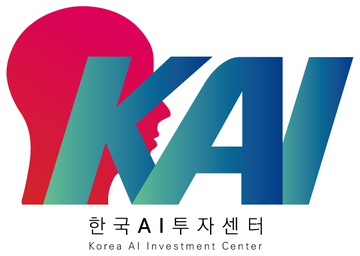
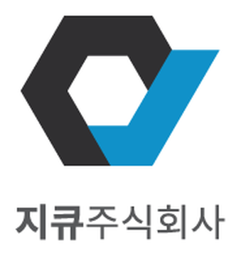
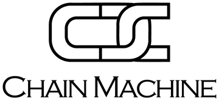
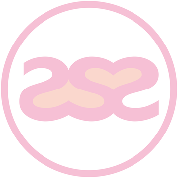

AX는 도구 사용기가 아니라 '일하는 방식'입니다. 기획자 한 명이 문서·데이터·운영의 반복을 자동화하고, 랜딩·프로토타입은 기획부터 프론트엔드까지 직접 만듭니다. 엔지니어를 자처하지 않습니다 — 이미 만들어 둔 실물과 운영 기록으로 증명하는 실행형 기획자입니다.
기획서·제안서·IR 문서 생산성부터, 간트 형식 주간보고와 자동집계로 개인 성과·목표치·프로젝트를 관리하는 운영까지 — 반복 업무를 AI·스크립트로 압축해 왔습니다. 회의·보고·정리에 쓰던 시간을 판단에 쓰게 만듭니다.
바이브 코딩으로 랜딩페이지를 기획·카피·화면플로우·프론트엔드까지 혼자 완성. 구독형 서비스 랜딩은 구독결제·예약·상담 3개 전환경로, 요금제 4티어, 진단도구까지 외주 없이 직접 구현했습니다.
재직 중에도 AX원스톱바우처 신청, AI 카운셀러 도입 검토, 에이전트 AI 내재화(위임 설계)를 직접 검토·설계했습니다 — AX를 '써보는 것'이 아니라 조직에 이식하는 일로 다룹니다.
기획과 제작 사이 인계 과정이 없어 검증이 빠릅니다. 작은 조직·새 사업일수록 즉시 전력입니다. 계획이 아니라 작동하는 결과물로 이야기합니다.


현재 진행형 — AX원스톱바우처는 신청·네이버클라우드 미팅 완료, 주간보고 자동집계는 매주 가동, 에이전트 AI 내재화는 설계 진행 중 — AX는 제 업무에 이미 들어와 있습니다. AI 사업개발(블루바이저시스템즈·PJ 2023)에서는 3개월 만에 월 신규가입이 목표 대비 1,000% 초과였습니다.
"AX로 자동화를 이루고 — 자동화로 업무의 낭비를 줄이고, 효율을 높이는 일을 하겠습니다."
남들이 흘려보낸 한 줄에서 기회를 읽습니다. 1999년 금융감독원 보도자료 한 줄을 찾아낸 것이 시스템트레이딩 사업의 시작이었습니다.
제품은 시스템으로, 고객은 단계별 흐름으로 설계합니다. 감이 아니라 구조로 전환을 만듭니다.
기획만 던지지 않습니다. 프로토타입은 물론 반복 업무 자동화까지 직접 만듭니다 — 검증이 가장 빠른 길이기 때문입니다.
전략은 사람이 실행합니다. 누가 맡아도 같은 품질이 나오는 운영 구조를 만듭니다.
이 관점이 다섯 개 사업에서 반복됐습니다 — 통찰(1999년 보도자료 한 줄) → 설계(알파 퍼널·전국 8개 센터) → 구현(랜딩·자동화 직접 제작) → 시스템(100명·재택 2,000명). 네 단계 모두 실제 매출과 조직으로 검증됐습니다.
"읽고 → 설계하고 → 만들고 → 굴러가게 한다 — 다섯 개 사업의 변함없는 순서."
사업비가 거의 없었습니다. 외주 개발 대신 기존 고객사에 '매출 구간별 수익 배분' 조건의 무상 개발 계약을 제안해 초기 자본 부담을 0으로 만드는 딜을 설계했습니다.
경쟁사가 수익률을 외칠 때, 시간 없는 직장인을 겨냥한 '하루 5분'의 편리함을 핵심 가치로 잡아 메시지를 차별화했습니다.
'투자자 본인 책임 원칙'을 명확히 고지하고, 타사 10곳을 벤치마킹해 허점을 줄인 계약서를 먼저 구축했습니다.
남긴 자산 — 무상 개발·수익 배분 계약 구조 · '하루 5분 투자' 포지셔닝 · 벤치마킹 기반 표준 계약서. 이 셋은 이후 사업에서도 이어졌습니다.
"자본은 150만 원, 개발비는 0 — 제약을 계약 구조로 뒤집으면, 제약은 해자가 됩니다."
증권사 OpenAPI(HTS) 연동(국내 증권사 복수)을 전제로 PC·모바일 멀티플랫폼 제품을 정의 — '외부 시스템 위에서 돌아가는 제품'을 시스템 단위로 설계했습니다.
7일 무료체험 진입 → 가입·체험·전환 → GOLD·PLATINUM·DIAMOND 등급 구독까지 퍼널 5단계를 직접 설계. 사용자 경험과 비즈니스 모델을 같은 아키텍처에 넣었습니다.
셋팅·영업 스크립트·KPI로 재현 가능한 운영을 만들고, 종목선별 자동화를 의도적으로 배제 — 투자판단을 고객에게 귀속시키는 컴플라이언스를 설계 단계에 내장했습니다.
광고·콘텐츠 → 7일 무료체험 신청
증권사 계좌·OpenAPI 연동을 함께 세팅
GOLD·PLATINUM·DIAMOND
결제·동의 절차 표준화
사용가이드·교육자료 안내
응대 품질 관리 체계
예산 0의 협상 — 개발사 요구 개발비 1억+. '수익 7:3 배분' 역제안 + 직접 연대보증으로 초기 부담 0원 계약 — 첫 달 3,000만 → 2개월차 7,000만 → 월 1억+로 성장, 5개월 만에 수익 배분으로 개발비 전액을 충당했습니다.


금융SW '알파'의 지역 센터는 상권분석부터 인원 배치까지 다섯 갈래가 모두 끝나야 문을 여는 조직 단위였습니다. 통상 3개월이 걸리는 설립을, 수원 1호점에서는 다섯 갈래를 같은 주에 겹쳐 돌려 2주 만에 끝냈습니다. 그 과정을 매뉴얼로 만들어 전국 8개 센터에 그대로 복제했습니다.
수원 1호점 — 상권분석·입지·인테리어·집기·인원 배치를 같은 주에 겹쳐 돌려, 통상 3개월 걸리는 설립을 2주에 끝냈습니다. 성과가 검증된 조직장을 센터장으로 발탁해 지역 네트워크로 채용까지 마치고, 과정을 매뉴얼로 만들어 8개 센터에 복제했습니다.
센터장에게 자율 경영권을 주되 성과 기반 보상으로 책임을 묶었습니다 — 권한과 책임을 같은 크기로.
전환율(CVR)을 핵심 지표로 두고 우수 센터에 리소스를 추가 배분해, 잘하는 곳이 더 잘하게 만드는 경쟁 구조를 설계했습니다.
단기 인력 2,000명을 직접 모집·운영 — 정규직 1:N 배정, 재택 성과를 담당자 KPI에 연동, 우수자 급여 1.5배. 카카오 커뮤니티 누적 20만으로 대행비 절감 + 브랜드 런칭 속도를 확보했습니다.
배움 — 광주지점은 내부 우려를 충분히 검증하지 않은 채 밀어붙였고, 결국 폐쇄로 끝났습니다. 이후 모든 신규 투자·제휴 전 '가정 검증 + 반대 의견 먼저 듣기'를 원칙으로 세웠습니다.
"조직관리는 감독이 아니라 설계 — 권한·책임·보상이 같아지면, 조직은 스스로 움직입니다."
제품 가치를 서포터의 언어로 번역. 펀딩 상세 스토리를 1·2·3차로 반복 개선하며 메시지·후킹을 다듬어 전환을 끌어올렸습니다.
리워드 구성과 가격 티어를 설계하고, 응대·운영 교육자료까지 직접 제작해 캠페인 실행 체계를 갖췄습니다.
프로모션·이벤트를 운영하고 성과보고로 측정·개선 — 캠페인을 감이 아니라 데이터로 굴렸습니다.
시스템트레이딩의 법적 성격 등 규제 쟁점을 명확히 정리·소명하고, 계약·고지 체계를 허점을 줄여 설계했습니다.
강성 민원 응대·해소 프로세스를 만들고, 환불·분쟁 기준을 합리적으로 정리했습니다.
외부 이슈 국면에서 내부에 투명하게 공유하고 100명 조직을 안정시켰습니다. 핵심 인력 이탈 없이 결속을 강화했습니다.
"성장은 파는 힘에서, 생존은 지키는 힘에서 — 둘 다 감이 아니라 시스템으로 만들었습니다."
신사업·제휴 트랙 25개를 리드하고 있습니다. 대기업 공동사업부터 B2B 제안·협상, 플랫폼 제작, IR, 채용·인사까지 — 기획·제작·실행을 직접 수행합니다. (2026년 1~10월 기준)
대기업 신규 협업 사업 — 협업 모델 정의부터 제안서 단독 작성, 실행, 관련 업무 자동화 시스템 구축까지 모두 직접 수행했습니다.
보험사, 공제회 15곳, 모빌리티, 카드사, 복지몰까지. 제안·미팅을 리드했습니다.
복구온·파크케어 랜딩 1인 제작, 화면 전환 플로우와 마케팅을 설계하고 실행했습니다. 복구온은 투자제안서와 개발 실가동까지.
통합IR(v5→v12)·대형 보험사 특화 투자제안서·복구온 투자제안서 — 3종을 기획·제작했습니다.
AX원스톱바우처 신청, AI 카운셀러 도입 검토, 에이전트 AI 내재화 설계, 주간보고 자동집계를 운영합니다.
채용·인사 운영 겸임 — 조직을 만들고 굴러가게 하는 일을 함께 맡고 있습니다.
동시 진행 — 보험·모빌리티 B2B 제안과 플랫폼 제작·IR, AX 내재화를 병행하고 있습니다. 규모가 다른 일을 동시에 굴리는 것이 제 기본 속도입니다.
"직함이 바뀌어도 일하는 방식은 같습니다 — 기획하고, 만들고, 굴러가게 합니다."
신사업 기획(0→1) · GTM · P&L·예산 관리 · 사업성 검토 · KPI 설계 · 경영진 보고 · 이해관계자 관리
업무 자동화(AI·스크립트) · 바이브 코딩 랜딩·프로토타입 1인 제작 · 문서·데이터 생산성 · AX 지원사업(바우처) · AI 에이전트 위임 설계
제휴·공동사업 · 제안서·RFP · 계약·납품 · 협상 · 파트너 관리 — 보험사·카드사·공제회·모빌리티 제안 54개사
제품 정의 · 고객여정(CJM)·퍼널 설계 · 과금 구조 · 운영 표준화(SOP) · 컴플라이언스 내장
조직 빌딩·성과 보상 설계 · 재택 2,000명 운영 시스템 · 채용·인사 · 위기 대응
퍼포먼스 마케팅(CVR) · 크라우드펀딩 4억+ · B2B/B2C 영업 조직 · 콘텐츠·커뮤니티(누적 20만)
증거 위치 — 사업·전략·조직은 Case 01~03, 세일즈·리스크는 Case 04·05, AX는 현재 진행 중인 트랙에서 각각 확인할 수 있습니다.
"만들 줄 아는 기획자"가 아니라 "이미 만들어 둔 기획자" — 역량은 산출물이 증명합니다.
2016년 7월 톡톡스탁부터 2025년 9월까지 — 지큐그룹에서 9년 2개월, 다섯 개 사업을 대표이사로 직접 런칭·운영한 시간입니다. 한 그룹에서 끝까지 책임진 연속성이 제 강점입니다.




왜 이 이야기를 하나 — 브랜드가 여럿이라 이직으로 보이기 쉽습니다. 실제로는 한 그룹 안에서 사업을 하나씩 세운 기록이고, 이력서·IR·랜딩 원문으로 전부 증빙됩니다.
"사업이 다섯 개인 것은 경력의 폭입니다 — 0→1부터 조직 정리까지 한 사람이 겪었습니다."
| 기간 | 소속 | 역할 · 내용 |
|---|---|---|
| 2025.12~현재 | ㈜올림포스네트웍스 | 전략사업실 파트장 (前 전략기획팀 → 부서이동) — 신사업·B2B 제휴·플랫폼·IR·인사 |
| 2016.07~2025.09 | 지큐그룹 (톡톡스탁→지큐㈜→라벨) | 창업·대표이사 — 0→1 런칭·스케일업·조직화 9년 2개월 (위 Case 01~05) |
| 2015.09~2016.06 | 게리온 | 증권연구부 팀장 — 개인 매출 1억 · 회사 매출 567% 성장 기여 |
| PJ 2024.10~12 | 멸치 | 신사업기획 리드 — 펫 신사업 기획·오프라인 매장 테스트 운영 |
| PJ 2023.12~2024.02 | 마케티어 | 홍보실 파트장 — 카카오 톡스토어 컨설팅·소상공인 B2B 마케팅 전략·실행 |
| PJ 2023.02~11 | 블루바이저시스템즈 | AI 사업개발 리드 — 3개월 만에 월 신규가입 목표 대비 1,000% 초과 (B2C) |
증빙 안내 — 이력서·포트폴리오·자소서는 동일한 사실 기록에서 작성했습니다. 제안서·IR·랜딩 원문 등 증빙 자료는 면접 시 제공 가능합니다.
"수치를 앞세우는 이유는 하나입니다 — 기간과 기준을 밝히고 증빙 가능한 항목은 면접에서 보여드리기 때문입니다."